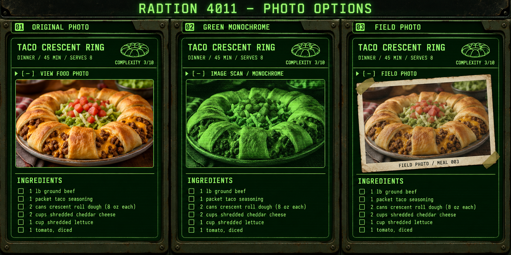

01 / ORIGINAL PHOTO

The original colors make the dish easy to recognize. The photo would stay hidden until you tap “View food photo.”
Compare three ways to show a food photo inside a recipe while keeping the terminal look. On a phone, scroll down to see each option.

The original colors make the dish easy to recognize. The photo would stay hidden until you tap “View food photo.”
A green image scan blends into the Pip-Boy theme. Food colors are replaced with shades of green.
A worn, taped-in photograph keeps the food recognizable and gives it a wasteland field-journal feel.
VISUAL MOCKUPS ONLY. The generated food photo and sample text illustrate the design; your saved recipes and ingredient amounts have not changed.
OPEN FULL COMPARISON IMAGE ↗